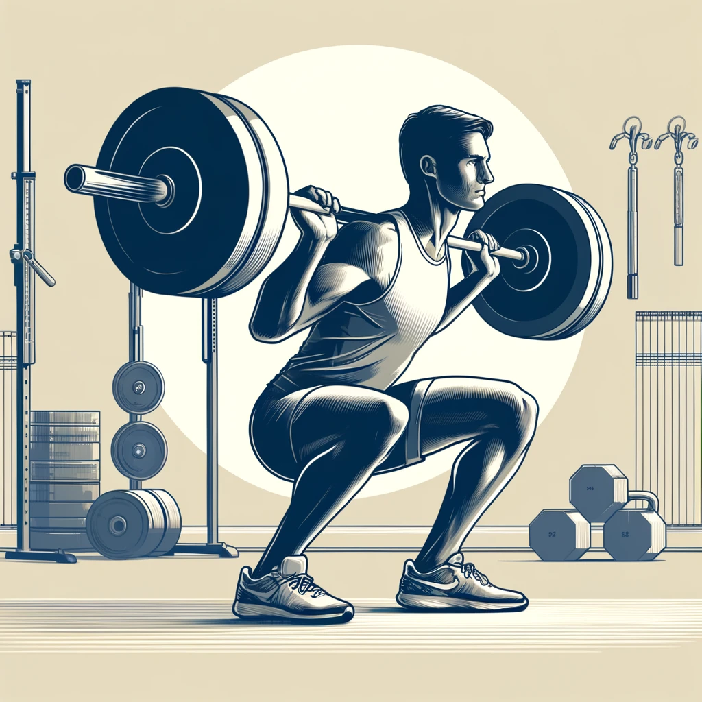
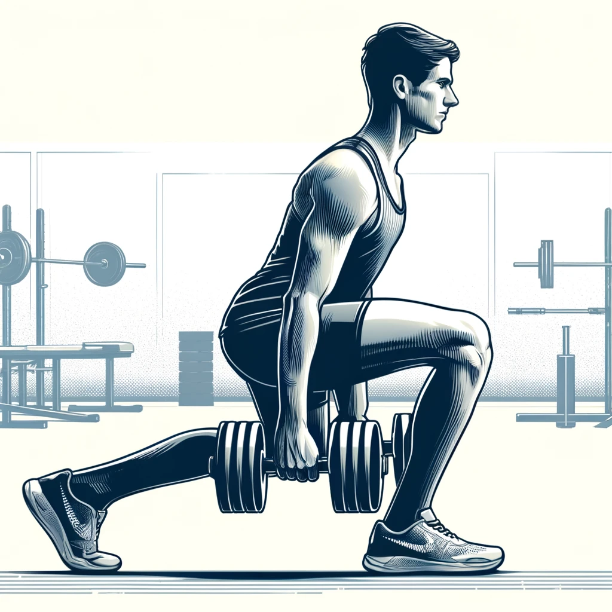
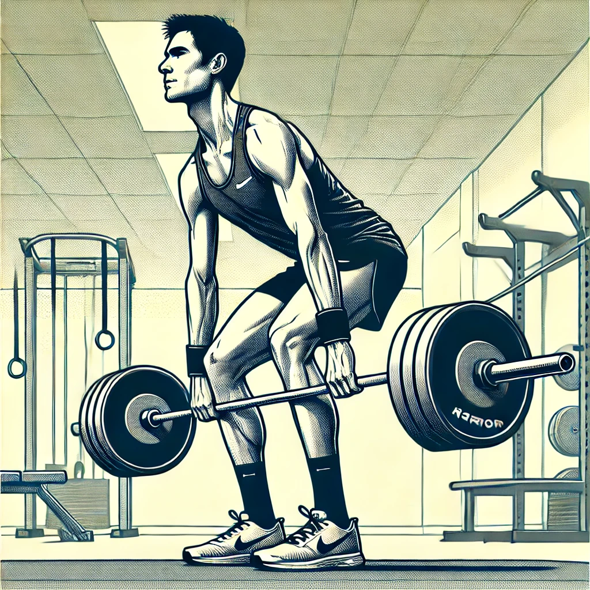
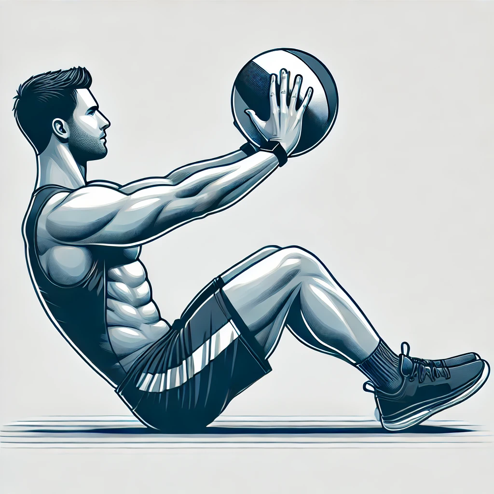
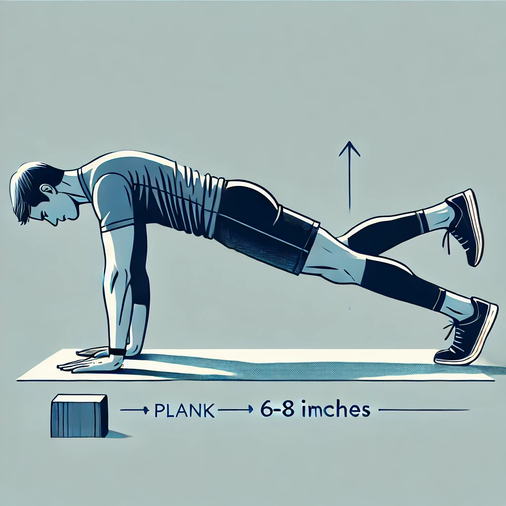
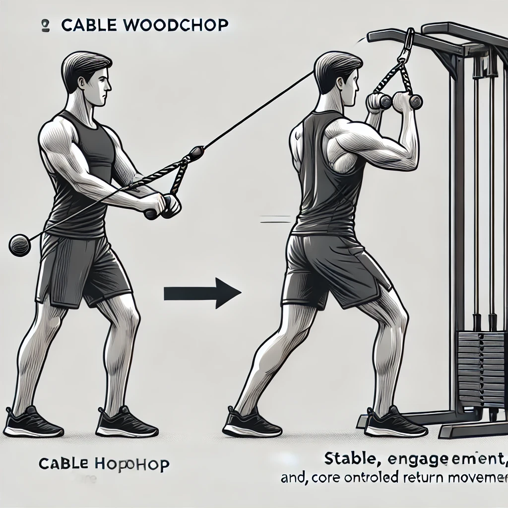

Strength Exercises for Marathon Runners
Lower Body Strength
- Front Squats

- Purpose:
- Build lower body strength
- Improve core stability
- Enhance running posture
- Instructions:
- Stand with feet slightly wider than hips, toes pointed out
- Option 1: Hold dumbbells at shoulders
- Option 2: Rack barbell at collar bone level, elbows high
- Squat while keeping torso upright
- Keep knees aligned with toes
- Drive through heels to stand
- Benefits for Runners:
- Strengthens quadriceps and core
- Improves running posture
- Enhances uphill running power
- Tips:
- Start with dumbbell version to master form
- Keep elbows high throughout barbell version
- Maintain upright position
- Single Leg Romanian Deadlifts

- Purpose:
- Develop unilateral strength
- Improve balance and stability
- Strengthen posterior chain
- Instructions:
- Stand on one leg, slight bend in knee
- Hinge at hips while lifting other leg behind
- Keep hips square, back straight
- Lower torso while raising back leg
- Return to start by engaging glutes and hamstrings
- Benefits for Runners:
- Prevents IT band syndrome
- Improves running form during fatigue
- Reduces risk of hamstring injuries
- Tips:
- Master bodyweight before adding weight
- Keep standing knee slightly soft
- Focus on hip hinge movement
- The Deadlift

- Purpose:
- Strengthen posterior chain muscles
- Improve power and stability
- Enhance overall running performance
- Instructions:
- Stand with feet shoulder-width apart, toes slightly pointed out.
- Bend down and grasp the barbell with a mixed or double overhand grip.
- Lift the bar by extending legs, keeping back straight and core engaged.
- Lock hips and knees at the top, bar over shins.
- Slowly lower the bar back to the ground, maintaining a straight back.
- Benefits for Runners:
- Strengthens full body, especially posterior chain
- Improves power and running economy
- Enhances posture and running form
- Considerations:
- Learn proper form from a qualified trainer
- Start with light weight and gradually increase
- Incorporate cautiously into running routine to avoid overtraining
Core and Stability
- Russian Twists

- Purpose:
- Strengthen obliques and rotational core
- Improve running stability
- Enhance torso control
- Instructions:
- Sit with knees bent, feet flat or raised
- Lean back slightly, maintaining straight back
- Hold weight or medicine ball at chest
- Rotate torso side to side
- Touch weight to ground on each side
- Keep chest up and core engaged
- Benefits for Runners:
- Improves rotational stability while running
- Reduces energy waste from torso movement
- Enhances power transfer through core
- Helps maintain form during fatigue
- Tips:
- Start without weight to master form
- Keep back straight throughout
- Rotate from core, not arms
- Control the movement speed
- Planks with Leg Lifts

- Purpose:
- Build core stability
- Improve hip strength
- Enhance running form
- Instructions:
- Start in forearm plank position
- Keep body straight from head to heels
- Lift one leg 6-8 inches
- Hold 2-3 seconds
- Alternate legs
- Benefits for Runners:
- Reduces energy waste while running
- Prevents lower back pain
- Enhances stride stability
- Tips:
- Don't let hips rock side to side
- Keep shoulders over elbows
- Progress to longer holds
- Cable Woodchops

- Purpose:
- Develop rotational core strength
- Improve running economy
- Enhance overall stability
- Instructions:
- Stand sideways to cable machine
- Grab handle at high position
- Rotate and pull down across body
- Control return movement
- Benefits for Runners:
- Improves running efficiency
- Reduces upper body rotation
- Better power transfer
- Tips:
- Move from hips, not arms
- Keep core engaged throughout
- Don't twist lower back
Upper Body and Power
- Pull-ups/Lat Pulldowns
- Purpose:
- Build upper body strength
- Improve posture
- Enhance arm drive
- Instructions:
- Pull-ups:
- Grip bar slightly wider than shoulders
- Pull chest to bar
- Lower with control
- Lat Pulldowns:
- Grip bar wide
- Pull to upper chest
- Control return
- Benefits for Runners:
- Maintains good running posture
- Reduces shoulder fatigue
- Improves breathing efficiency
- Tips:
- Start with lat pulldowns if needed
- Focus on controlled movement
- Keep shoulder blades down
- Medicine Ball Slams
- Purpose:
- Develop explosive power
- Build full-body strength
- Enhance core stability
- Instructions:
- Stand with feet shoulder-width apart
- Raise ball overhead
- Slam ball forcefully to ground
- Catch ball on bounce or pickup
- Maintain athletic stance
- Benefits for Runners:
- Improves running power
- Enhances core strength
- Develops better coordination
- Tips:
- Use hips to generate power
- Keep core tight throughout
- Start with lighter ball
Upper Body and Power
- Forward Lunges
- Purpose:
- Build single-leg strength and stability
- Improve dynamic balance
- Enhance stride length and power
- Instructions:
- Stand with feet hip-width apart
- Step forward with one leg
- Lower body until both knees are bent at 90 degrees
- Keep front knee aligned with ankle
- Push off front foot to return to start
- Alternate legs with each rep
- Benefits for Runners:
- Directly translates to running stride
- Improves leg drive and power
- Enhances running economy
- Reduces injury risk through better stability
- Tips:
- Start bodyweight before adding dumbbells
- Keep torso upright throughout
- Land softly and controlled
- Progress to walking lunges for additional challenge
- Glute Bridges
- Purpose:
- Activate and strengthen glutes
- Improve hip extension power
- Prevent common running injuries
- Instructions:
- Lie on back, knees bent, feet flat
- Position feet hip-width apart
- Drive through heels to lift hips
- Squeeze glutes at top position
- Form straight line from shoulders to knees
- Lower with control
- Benefits for Runners:
- Prevents runner's knee
- Reduces lower back stress
- Improves running power
- Enhances hip stability
- Tips:
- Keep core engaged throughout
- Press knees slightly outward
- Don't overarch lower back
- Progress to single-leg version